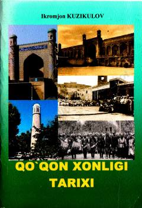

QXQo'qon xonligi tarixi bo'yicha o'quv-uslubiy qo'llanma.
Ushbu o'quv-uslubiy qo'llanma Qo'qon xonligi tarixini o'rganishga bag'ishlangan bo'lib, unda xonlikning vujudga kelishi, minglar sulolasi, ijtimoiy-iqtisodiy ahvol va tashqi siyosat masalalari yoritilgan. Kitobda xonlik tarixiga oid mahalliy va rus manbalari, shuningdek, mustaqillik yillarida olib borilgan ilmiy tadqiqotlar tahlil qilinadi.